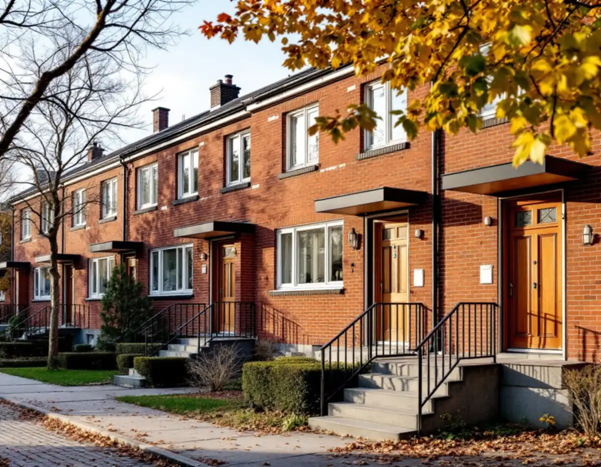
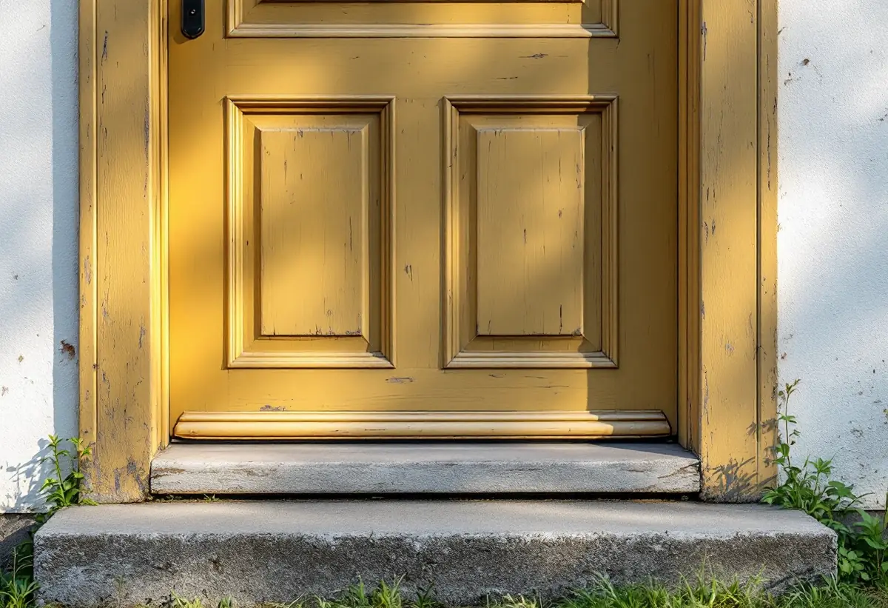

Platsbesök
Vi ser på dörr, karm, trappa och räcke och vad som går att reparera.
Stockholms översiktsplan räknar de ursprungliga husens fönster, entrépartier, balkonger och räcken till det som bär riksintresset Vällingby–Råcksta. För den som ska byta en ytterdörr eller laga ett räcke på radhuset gör det skillnad. Geal Entreprenad AB reparerar och byter dörrar, entréer och räcken på radhus i Vällingby och Råcksta, med gratis platsbesök och skriftligt kostnadsförslag.

Enligt översiktsplanens beskrivning av riksintresset (AB 120) planerades Vällingby–Råcksta som landets första ABC-stad, med arbete, bostäder och centrum och högst 900 meters gångväg till tunnelbanan. Området byggdes ut under 1950-talet och är ett sammanhållet uttryck för det årtiondet.
Bland de värdebärande karaktärsdragen räknar planen de ursprungliga husens gestaltning och byggnadsdetaljer såsom fönster, entrépartier, balkonger och räcken. Längst ut från centrum ligger områden med radhus och småhus, och stadens vägledning för småhusområden beskriver dem som enhetligt utformade husgrupper med tidstypisk färgsättning.
I vägledningens tabell är både Vällingby och Råcksta riksintresse och kulturhistoriskt värdefull miljö. För en snickare är det detaljerna som står i fokus: dörren, entrén och räcket som ser likadana ut på varje hus i gruppen.

Stockholms stad skriver att du behöver söka bygglov för åtgärder som annars är lovfria om huset ligger inom ett riksintresse för kulturmiljövården, som visas med blå ring i Stadsmuseets klassificeringskarta. Staden påpekar också att lovplikten kan gälla även om byggnaden inte i förväg är utpekad som särskilt värdefull. För dörrar och fönster räknar staden upp ändringar som att byta material eller kulör, ändra storlek eller placering och ändra profilering på karmar och bågar.
Inom riksintresset får inga åtgärder göras som påtagligt kan skada riksintressets värden. Inför byggarbetet kan det behövas en antikvarisk förundersökning och en konsekvensbeskrivning. Därför börjar vi med att se om en dörr eller ett räcke kan repareras med samma material och profil, innan något byte föreslås.
Är du osäker på vad som gäller kan du enligt staden kontakta Stockholms stadsmuseum för rådgivning och bedömning. Museet vill då ha adress, fastighetsbeteckning och stadsdel, byggnadsår, eventuella ombyggnader med årtal och fotografier av fastigheten, både översiktliga och av fasaderna. Det underlaget tar vi gärna fram vid platsbesöket.
Stadens områdesfakta för 2025 räknar 449 bostäder i småhus i Vällingby. Av dem är 228 bostadsrätter och 220 äganderätter. I Råcksta är 91 av småhusen bostadsrätter och 299 äganderätter. Ungefär hälften av småhusen i Vällingby är alltså bostadsrätter.
I ett bostadsrättsradhus är det föreningens stadgar som avgör vem som ansvarar för ytterdörren, entrén och räcket. Det påverkar både vem som beställer arbetet och om rotavdraget går att få. Bostadsrättslagen kräver dessutom styrelsens tillstånd för väsentliga förändringar.
Vägledningen beskriver hur radhusen i tunnelbanestäderna byggdes på bryn och platåer utanför centrum, med en mjuk anpassning till terrängen där nivåskillnaderna ofta tas upp med en suterrängvåning.
En ruttnad entrétrappa i trä eller ett räcke som har lossnat kan ofta byggas om i samma form. Ett nytt skärmtak över entrén räknas däremot som en tillbyggnad och ett förråd som en komplementbyggnad, och inom riksintresset gäller inte lovbefrielsen för dem. Om kulörerna på radhuset läser du under målare i Vällingby, och om plåten på taket under plåtslagare i Vällingby.
Vi ser på dörr, karm, trappa och räcke och vad som går att reparera.
Stadsmuseets karta och, i en förening, stadgarna visar vad som gäller.
Trä, beslag och profiler mäts upp så att lagningen följer originalet.
Reparation och eventuella nya delar redovisas var för sig.
Skadade delar byts i samma material och profil, resten lämnas kvar.
Vi går igenom arbetet med dig och, när det behövs, med föreningen.
Äger du radhuset ger Skatteverket rotavdrag för att byta och reparera dörrar och dörrlås och för att reparera och underhålla entrétrappor, balkonger och altaner med tillhörande räcken, förutsatt att de är ihopbyggda med huset.
I ett bostadsrättsradhus ska arbetet ske innanför bostadens tak, väggar och golv och gälla det du ansvarar för enligt stadgarna. Arbete på insidan av ytterdörren ger avdrag, men inte att byta ytterdörren eller att reparera balkonger, altaner och räcken. Avdraget är 30 procent av arbetskostnaden, högst 50 000 kr per person och år och högst 75 000 kr tillsammans med rutavdrag. Material och resor ingår inte, och Geal drar avdraget direkt på fakturan.
Hur mycket av dörren eller räcket som går att spara, om profiler och beslag måste tas fram och om det behövs underlag för ett bygglov väger tyngst. Platsbesöket är gratis och du får ett skriftligt kostnadsförslag.
Altan, väggar, dörrar och inredning.
Snickare i Stockholm →Takbyte, takbesiktning och plåtarbeten.
Takläggare i Vällingby →Radhusen i riksintresset Vällingby–Råcksta.
Takrenovering i Vällingby →Riksintresset och villaområdena.
Attefallshus i Vällingby →Riksintresset, radhusen och våtzonerna.
Badrumsrenovering i Vällingby →Bygga till i riksintresset.
Byggföretag i Vällingby →Puts från 1950-talet och kulör i riksintresset.
Fasadmålning i Vällingby →Tegel, puts och skivor på tunnelbanestadens hus.
Fasadrenovering i Vällingby →Radhus och kedjehus i riksintresset.
Fönsterbyte i Vällingby →Radhusens fönster.
Fönsterrenovering i Vällingby →Gamla mattor, lim och asbest.
Golvläggare i Vällingby →Lamellgolv, svikt och slitskikt.
Golvslipning i Vällingby →Kök i lägenheter och radhus.
Köksrenovering i Vällingby →Radhus och lägenheter i ABC-staden.
Målare i Vällingby →Takplåt, rännor och beslag i riksintresset.
Plåtslagare i Vällingby →Kälvesta och husgrupperna.
Takbyte i Vällingby →Väggar från 1950-talet.
Tapetsering i Vällingby →Radhusen, riksintresset och lovet.
Tillbyggnad i Vällingby →ABC-staden, eternit och föreningen.
Totalrenovering i Vällingby →